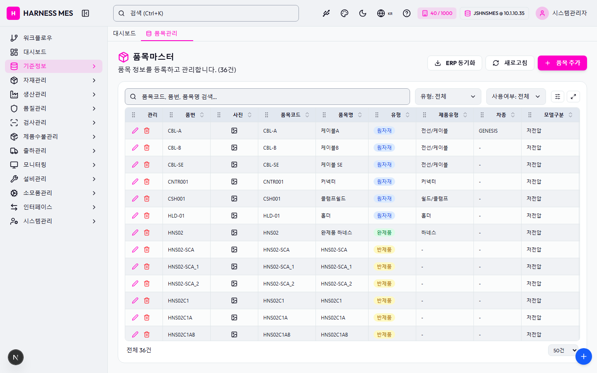

Route: /master/part
Status: PASS / HTTP 200
| 기능/버튼 | 처리 방식 | 상태 | 비고 |
|---|---|---|---|
| 화면 로드 | GET /master/part | 실행 | HTTP 200 |
| 라우트 prewarm | 직접 HTTP 확인 | 실행 | HTTP 200, 10213ms |
| 초기 API 호출 | 브라우저 네트워크 수집 | 실행 | 12건 |
| 🇰🇷 | 화면 버튼 목록화 | 목록화 | 후속 메뉴별 세부 시나리오 실행 대상 |
| 시스템관리자 | 화면 버튼 목록화 | 목록화 | 후속 메뉴별 세부 시나리오 실행 대상 |
| 워크플로우 | 화면 버튼 목록화 | 목록화 | 후속 메뉴별 세부 시나리오 실행 대상 |
| 대시보드 | 화면 버튼 목록화 | 목록화 | 후속 메뉴별 세부 시나리오 실행 대상 |
| 기준정보 | 화면 버튼 목록화 | 목록화 | 후속 메뉴별 세부 시나리오 실행 대상 |
| 자재관리 | 화면 버튼 목록화 | 목록화 | 후속 메뉴별 세부 시나리오 실행 대상 |
| 생산관리 | 화면 버튼 목록화 | 목록화 | 후속 메뉴별 세부 시나리오 실행 대상 |
| 품질관리 | 화면 버튼 목록화 | 목록화 | 후속 메뉴별 세부 시나리오 실행 대상 |
| 검사관리 | 화면 버튼 목록화 | 목록화 | 후속 메뉴별 세부 시나리오 실행 대상 |
| 제품수불관리 | 화면 버튼 목록화 | 목록화 | 후속 메뉴별 세부 시나리오 실행 대상 |
| 출하관리 | 화면 버튼 목록화 | 목록화 | 후속 메뉴별 세부 시나리오 실행 대상 |
| 모니터링 | 화면 버튼 목록화 | 목록화 | 후속 메뉴별 세부 시나리오 실행 대상 |
| 설비관리 | 화면 버튼 목록화 | 목록화 | 후속 메뉴별 세부 시나리오 실행 대상 |
| 소모품관리 | 화면 버튼 목록화 | 목록화 | 후속 메뉴별 세부 시나리오 실행 대상 |
| 인터페이스 | 화면 버튼 목록화 | 목록화 | 후속 메뉴별 세부 시나리오 실행 대상 |
| 시스템관리 | 화면 버튼 목록화 | 목록화 | 후속 메뉴별 세부 시나리오 실행 대상 |
| 품목관리 | 화면 버튼 목록화 | 목록화 | 후속 메뉴별 세부 시나리오 실행 대상 |
| ERP 동기화 | 화면 버튼 목록화 | 목록화 | 후속 메뉴별 세부 시나리오 실행 대상 |
| 새로고침 | 화면 버튼 목록화 | 목록화 | 후속 메뉴별 세부 시나리오 실행 대상 |
| 품목 추가 | 화면 버튼 목록화 | 목록화 | 후속 메뉴별 세부 시나리오 실행 대상 |
| 입력 필드 | DOM 수집 | 목록화 | 2개 |
| 선택 필드 | DOM 수집 | 목록화 | 3개 |
| 목록/그리드 | DOM 수집 | 목록화 | table 1, grid 0 |
| Method | URL | Status | OK |
|---|---|---|---|
| GET | /api/health | 200 | OK |
| GET | /api/db-info | 200 | OK |
| GET | /api/health | 200 | OK |
| GET | /api/db-info | 200 | OK |
| GET | /api/db-info | 200 | OK |
| GET | /api/auth/me | 200 | OK |
| GET | /api/system/configs/active | 200 | OK |
| GET | /api/system/comm-configs?commType=SERIAL&useYn=Y | 200 | OK |
| GET | /api/menu-categories/tree | 200 | OK |
| GET | /api/ai/page-tools/master.part | 200 | OK |
| GET | /api/master/parts?limit=5000 | 200 | OK |
| GET | /api/master/com-codes/all-active | 200 | OK |
error: Failed to load resource: the server responded with a status of 404 (Not Found) error: Failed to load resource: the server responded with a status of 404 (Not Found) requestfailed: GET https://fonts.gstatic.com/s/outfit/v15/QGYvz_MVcBeNP4NJtEtq.woff2 net::ERR_ABORTED

H HARNESS MES 🇰🇷 40 / 1000 JSHNSMES @ 10.1.10.35 시스템관리자 워크플로우 대시보드 기준정보 자재관리 생산관리 품질관리 검사관리 제품수불관리 출하관리 모니터링 설비관리 소모품관리 인터페이스 시스템관리 대시보드 품목관리 품목마스터 품목 정보를 등록하고 관리합니다. (36건) ERP 동기화 새로고침 품목 추가 유형: 전체 유형: 원자재 유형: 반제품 유형: 완제품 유형: 소모품 사용여부: 전체 사용여부: 사용 사용여부: 미사용 관리 품번 사진 품목코드 품목명 유형 제품유형 차종 모델구분 규격 리비전 마킹문구 고객품번 단위 색상 박스장입수량 최소불출단위수량(자재) 묶음단위수량(생산공정품) 검사구분 기본시료수 AQL 정책 유효기간(일) 유효기간 연장(일) 팔레트구성단위 품목고정 적재로케이션 사용여부 CBL-A CBL-A 케이블A 원자재 전선/케이블 GENESIS 저전압 A - - MM - 밀리미터 - - - 100,000 검사 50 AQLP-II-1.0-2.5 360일 180일 - - Y CBL-B CBL-B 케이블B 원자재 전선/케이블 - 저전압 A - - MM - 밀리미터 - - - 100,000 검사 50 AQLP-II-1.0-2.5 360일 180일 - - Y CBL-SE CBL-SE 케이블 SE 원자재 전선/케이블 - 저전압 A - - MM - 밀리미터 - - - 100,000 검사 3 AQLP-II-1.0-2.5 360일 180일 - - Y CNTR001 CNTR001 커넥터 원자재 커넥터 - 저전압 A - - EA - 개 - - - 500 검사 1 AQLP-II-1.0-2.5 360일 180일 - - Y CSH001 CSH001 클램프쉴드 원자재 쉴드/클램프 - 저전압 A - - EA - 개 - - - 200 검사 5 AQLP-II-1.0-2.5 360일 180일 - - Y HLD-01 HLD-01 홀더 원자재 홀더 - 저전압 A - - EA - 개 - - - 100 검사 3 AQLP-II-1.0-2.5 360일 180일 - - Y HNS02 HNS02 완제품 하네스 완제품 하네스 - 저전압 A - - EA - 개 - - - 1 - - - - - - - Y HNS02-SCA HNS02-SCA HNS02-SCA 반제품 - - 저전압 A - - EA - 개 - - - 10 - - - - - - - Y HNS02-SCA_1 HNS02-SCA_1 HNS02-SCA_1 반제품